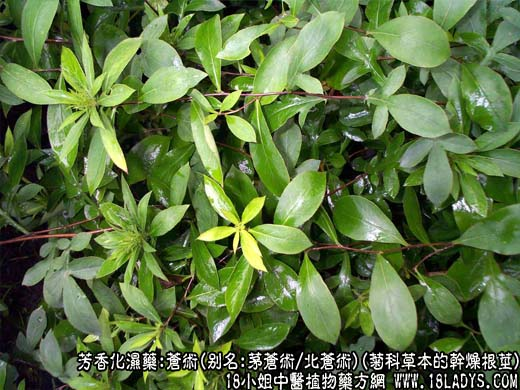
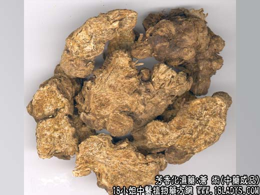
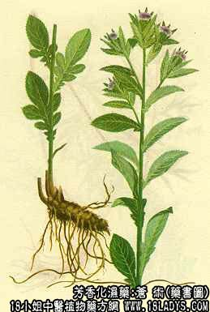

本品为常用中药。《神农本草经》列为上品，原名“术”至梁陶弘景《名医别录》提到术有白（即白术）赤（即苍术）之分，现商品又将苍术分两类。一产华东，中南，水湿切片后析出白霉如毛，称毛苍术。一类产东北，华东，切片后不生白霉称山苍术。
别名：茅苍术（毛苍术）、北苍术（山苍术）。
来源：菊科多年生草本植物：茅苍术（Atractylodes lancea(Thunb)） DC.）和北苍术（Atrcatylodes chinensis (DC,) koidz .）的干燥根茎。均为野生。
产地：茅苍术主产于江苏省茅山地区（故名茅苍术），湖北省襄樊地区，河南省信阳，南阳地区。以及安徽、浙江、江西等省均有生产。山苍术主产于华北，东北各省，山东、陕西、甘肃等地亦有生产。
性状鉴别：茅苍术：呈不规则的连珠状，又似疙瘩之连接，弯曲拘挛，条块大小不一。长2～厘米，直径0.8～1.5厘米。表皮深褐色略粗糙，有根痕及短小须根，有茎痕或偶带残茎。质坚实易折断。断面黄白色或灰白色，有明显的棕红色油腺散在，习称“朱砂点”。切断面水湿后，能析出微细的针状结晶，形如白霉。气芳香，味微甘而后苦辛。以形如连珠状，坚实，外皮深褐色，断面黄白色，显朱砂点为佳。
山苍术：形色略与茅苍术同。但体形较粗大有分歧。长约3～15厘米，直径1～3厘米，质亦坚实，但较茅苍术略松泡。断面黄白色，略显菊花心样放射纹理，亦有明显的棕红色油腺但较少。切断面水湿后无针状结晶析出，香气不及茅苍术浓烈，味甜微辛苦。以个肥大，坚实，去净毛须、气味芳香者为佳。
主要成分：含挥发油，其中主要有苍术醇（C15H26O）、苍术酮（C15H20O）。又含大量甲种和丁种维生素（但水煎剂不含甲种维生素）（注：化学元素数字为缩小并在右下）。
功效与作用：1、健胃。2、利尿、发汗，利尿作用不明显，但能增加钠、钾从小便排出。3、镇静，有效成分为挥发油。4、降血糖。5、强壮作用，可能与其所含维生素有关。
炮制：切皮，米泔水炒，土炒。
性味：辛苦温。
归经：入脾、胃经。
功能：燥湿健脾，去风湿。
主治：脾为湿困引起的运化失调，食欲不振，呕恶烦闷，腹胀泄泻；关节肢体疼痛。
临床应用：为祛湿的重要药物，不论内湿、外湿都勊应用。前人的经验说：“治外湿以苍术最为有效。
1、用于治疗消化不良（即所谓湿郁中焦），有胃脘满闷、食欲不振、或吐或泻，配厚朴、陈皮，方如平胃散；如偏于热滞，也可配香附、神曲、栀子等。
3、用于治疗风湿，尤其肌肉风湿。常配麻黄、桂枝、苡仁等，加强镇痛效果。如为热痹、有发热、口渴、关节红肿剧痛、苔黄、脉数，则配石膏等清热，白虎加苍术汤加减。
4、用于外科，对治疗阴疸、肛周结核等有一定效果。又可治疗湿热所致下肢腹胀痛无力而类似丹毒者，常配黄柏、牛膝、生苡仁等，方如四妙丸。
5、用于眼科、治疗夜盲症和麻疹后角膜软化，取其甲种维生素，多入丸散服（有报道用水煎也有效果）。可单味研末用，或与木贼配伍。处方：苍术120g，木贼60g，研末混合；饭时随蔬菜调入3～6g，或配雄羊肝。
此外，还可用于强壮。治精神不振，肢体无力，偏于虚寒者，配熟地、干姜。
使用注意：苍术性较辛燥，故阴虚血燥、有咯血鼻衄者不宜用。
附：苍术与厚朴均能化湿。治胃肠满闷和吐泻时，两者常配合同用，但祛风燥湿以苍术作用较强；温中除满则苍术不及厚朴。
用量：3～9g。
处方举例：1、平胃散（《局方》）：苍术9g，厚朴6g，陈皮6g，甘草3g，水煎服。
2、白虎加苍木汤加减：苍术9g，生石膏30g（打碎先煎），知母12g，甘草6g，桑枝12g，防己9g，银花藤9g，水煎服。
3、四妙丸（《丹溪心法》）：苍术、黄柏、牛膝、生苡仁各等分为末，水泛为丸，每服6～9g，开水送下。